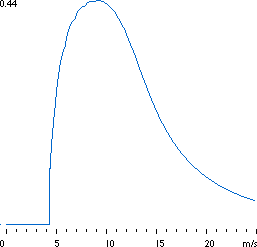

The Power Coefficient

 The
power coefficient tells you how efficiently a turbine converts
the energy in the wind to electricity. Very simply, we just divide
the electrical power output by the wind energy input
to measure how technically efficient a wind turbine is.
The
power coefficient tells you how efficiently a turbine converts
the energy in the wind to electricity. Very simply, we just divide
the electrical power output by the wind energy input
to measure how technically efficient a wind turbine is.
 In other words, we take the power
curve, and divide it by the area of the rotor to get the
power output per square metre of rotor area. For each wind speed,
we then divide the result by the amount of power
in the wind per square metre.
In other words, we take the power
curve, and divide it by the area of the rotor to get the
power output per square metre of rotor area. For each wind speed,
we then divide the result by the amount of power
in the wind per square metre.
 The graph shows a power coefficient curve
for a typical Danish wind turbine. Although the average efficiency
for these turbines is somewhat above 20 per cent, the efficiency
varies very much with the wind speed. (If there are small kinks
in the curve, they are usually due to measurement errors).
The graph shows a power coefficient curve
for a typical Danish wind turbine. Although the average efficiency
for these turbines is somewhat above 20 per cent, the efficiency
varies very much with the wind speed. (If there are small kinks
in the curve, they are usually due to measurement errors).
 As you can see, the mechanical efficiency
of the turbine is largest (in this case 44 per cent) at a wind
speed around some 9 m/s. This is a deliberate choice by the engineers
who designed the turbine. At low wind speeds efficiency is not
so important, because there is not much energy to harvest. At
high wind speeds the turbine must waste any excess energy
above what the generator was designed for. Efficiency therefore
matters most in the region of wind speeds where most of the energy
is to be found.
As you can see, the mechanical efficiency
of the turbine is largest (in this case 44 per cent) at a wind
speed around some 9 m/s. This is a deliberate choice by the engineers
who designed the turbine. At low wind speeds efficiency is not
so important, because there is not much energy to harvest. At
high wind speeds the turbine must waste any excess energy
above what the generator was designed for. Efficiency therefore
matters most in the region of wind speeds where most of the energy
is to be found.
Higher
Technical Efficiency is not Necessarily the Way Forward
It is not an aim in itself to have a high technical
efficiency of a wind turbine. What matters, really, is the cost
of pulling kilowatt hours out of the winds during the next 20
years. Since the fuel is free, there is no need to save it. The
optimal turbine is therefore not necessarily the turbine with
the highest energy output per year.
 On the other hand, each square metre of rotor
area costs money, so it is of course necessary to harvest whatever
energy you can - as long as you can keep costs per kilowatt hour
down. We return to that subject later on the page about optimising
wind turbines.
On the other hand, each square metre of rotor
area costs money, so it is of course necessary to harvest whatever
energy you can - as long as you can keep costs per kilowatt hour
down. We return to that subject later on the page about optimising
wind turbines.

|
Back | Home
| Forward |
© Copyright 2000 Soren Krohn.
All rights reserved.
Updated 9 September 2000
http://www.windpower.org/tour/wres/cp.htm